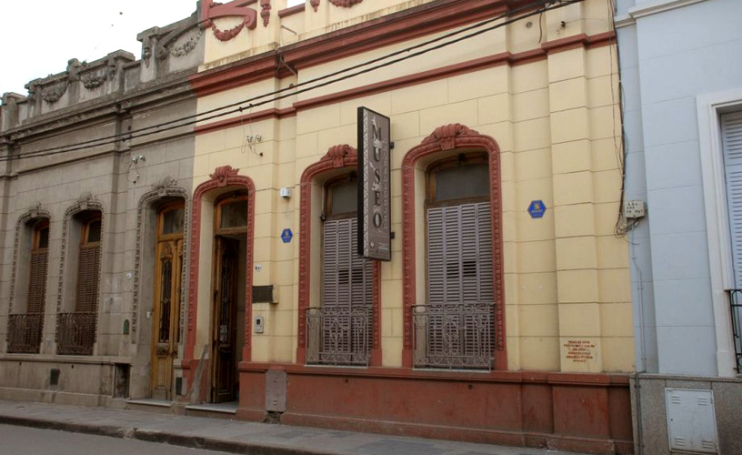
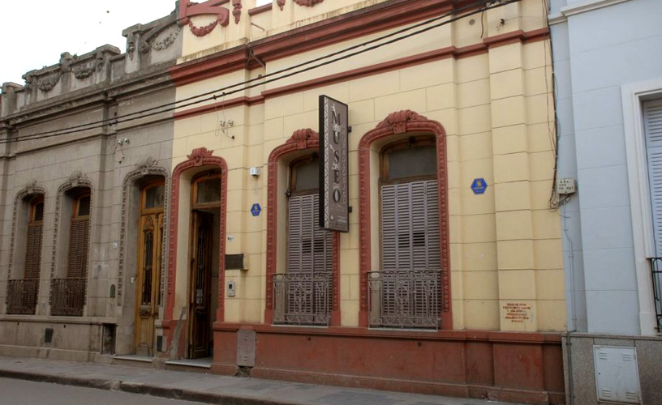
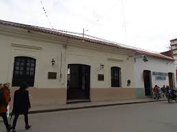

Museo Arqueológico
Ubicado en San Salvador de Jujuy, este museo alberga una rica colección de artefactos indígenas.

Descubre los museos más destacados de la provincia de Jujuy.
Ubicado en San Salvador de Jujuy, este museo alberga una rica colección de artefactos indígenas.
Un recorrido por la historia de Jujuy desde la época colonial hasta la actualidad.
Este museo está ubicado en una casona histórica del siglo XIX y destaca por su valor arquitectónico e histórico. Su nombre honra al General Juan Lavalle.